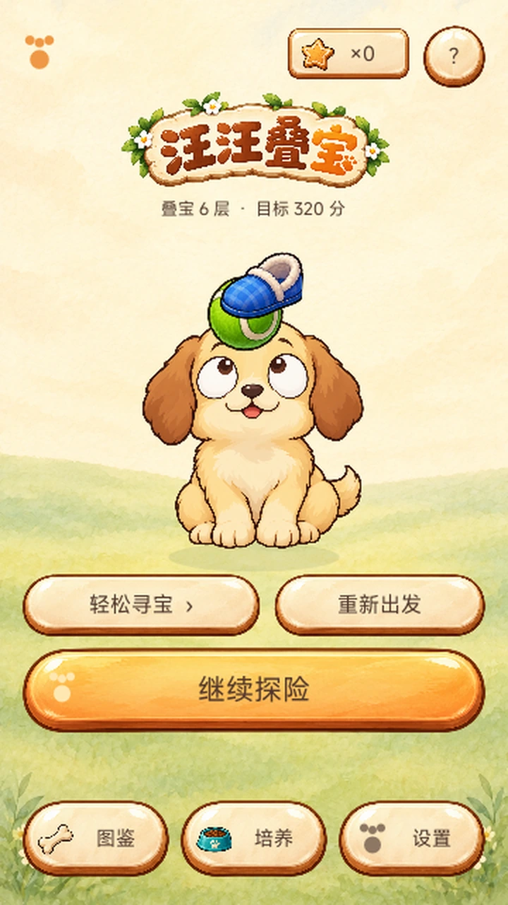
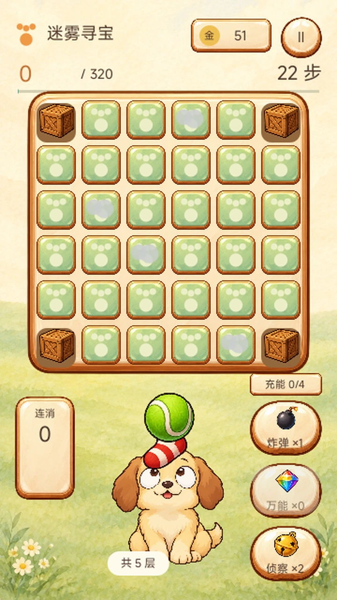
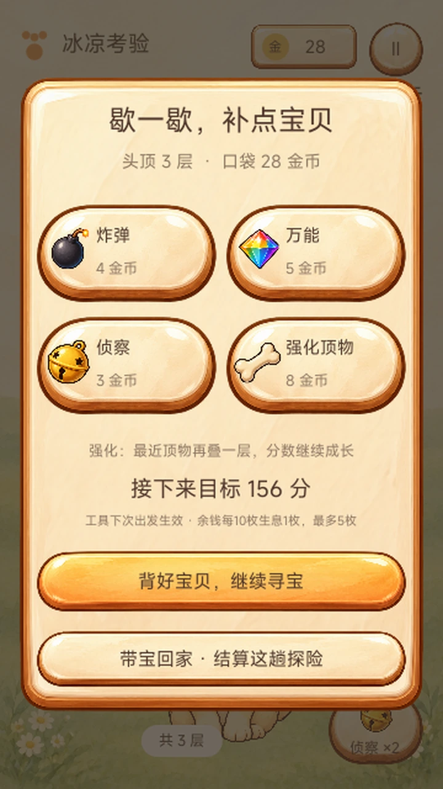
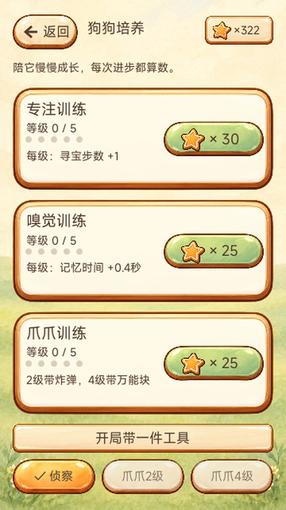
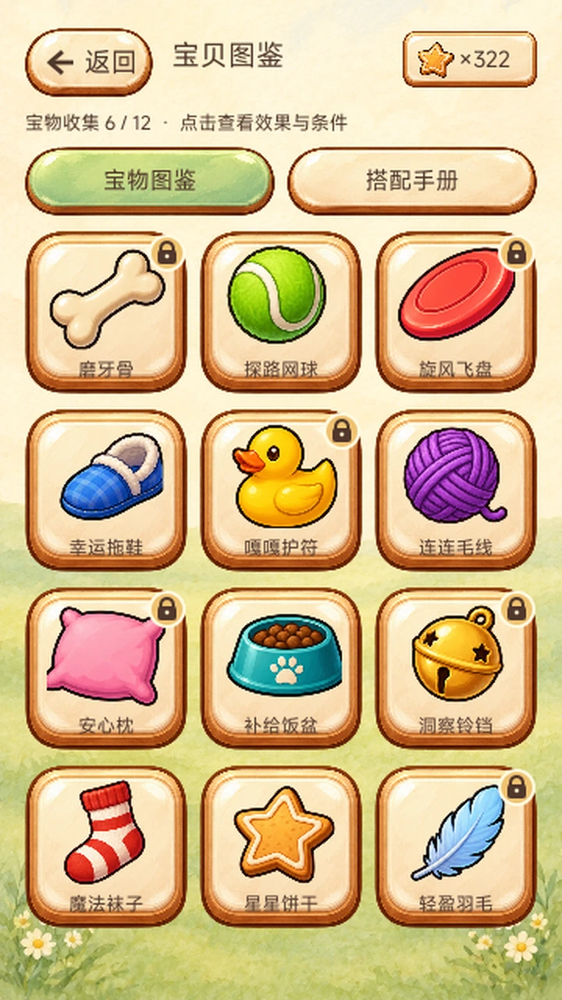

让难度随本局推进
早段少放图案、给足记忆时间，再逐步提高目标、引入障碍。用连续寻宝承接难度变化，把选宝和补给放在每次达标之后。
TAPTAP MAKER / 个人 AI 游戏实践
竖屏休闲益智 / 记忆配对 / 肉鸽寻宝
记住牌面、配对消除，把选到的宝物一件件叠到小狗头上。每轮达标后，决定补给再闯，还是带宝回家培养小狗。

TapTap Maker · 手机测试版本
GAMEPLAY / 核心体验
开局短暂展示牌面，盖牌后翻开两张相同图案即可消除并得分。步数有限，木箱、冰块和迷雾改变配对顺序。达到目标后从三件宝物中选一件，再到营地补给，挑战更高目标或结算回家。
TAPTAP GALLERY / 游戏展示图
五张原生预览截图分别记录主页、棋盘、营地、培养和图鉴。首屏横图是项目宣传图。
点击任意截图可查看原图。 多张画面可左右滑动，也可聚焦图库后使用方向键浏览。





DESIGN / 规则与取舍
早段少放图案、给足记忆时间，再逐步提高目标、引入障碍。用连续寻宝承接难度变化，把选宝和补给放在每次达标之后。
把宝物效果和头顶叠放对应起来，让玩家一眼知道这趟拿了什么。棋盘和道具仍占据最容易操作的位置，小狗和宝物放在棋盘下方。
营地同时提供补给与结算。玩家可以用本局金币换取继续探险的机会，也可以把积累带回去，兑换持续生效的培养。
把未完成探险和局外成长纳入保存流程。迭代时逐项核对返回游戏后的棋盘、培养进度，以及云同步反馈。
MY PRACTICE / 项目推进
我确定了竖屏配对规则、难度节奏、角色展示和局内外成长，再用 AI 协作把规则、界面和素材做进 TapTap Maker。先用原生预览检查核心流程和小屏操作，再通过手机扫码验证续玩与培养进度，并据反馈调整叠宝尺寸、翻牌反馈和背景。
TAPTAP / 体验状态
暂无公开试玩入口，当前可在本页查看玩法、设计取舍和测试版游戏画面。